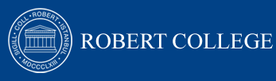

Robert College
- Vision&Mission
- Robert College strives to serve Turkey as a model of educational
excellence with the highest academic standards and quality of teaching.
Guiding Principals
- Robert College has a rich heritage
- Students are the focus
- "Being student-focused implies a spirit of partnership in teaching,
learning, and living at Robert College among the faculty, staff,
and students."
- Robert College students are prepared
- "We offer a rigorous program of studies, complemented by a robust
co-curricular program to prepare students for post-secondary
educational success in Turkey or abroad."
Robert College
"The Wise Door for Wise Life"